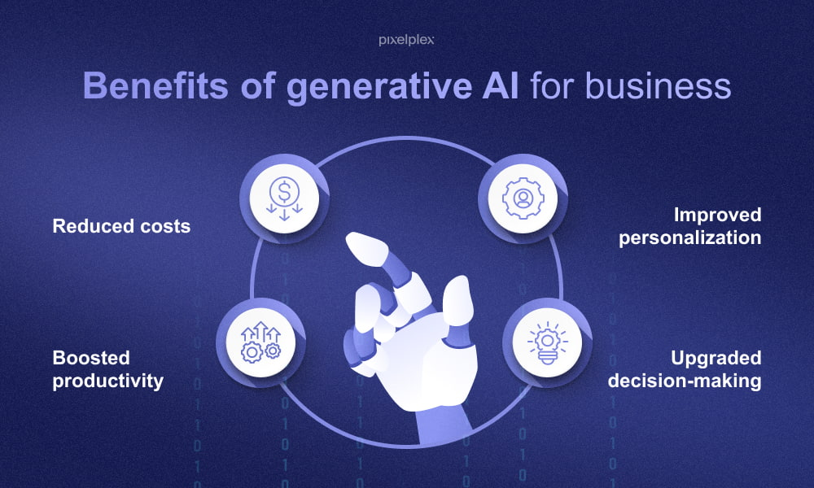
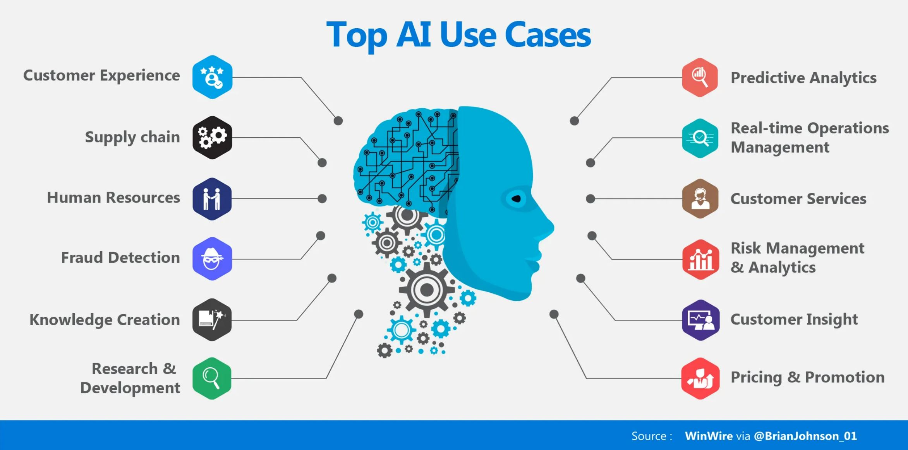
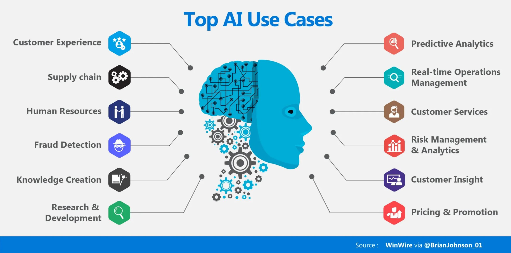
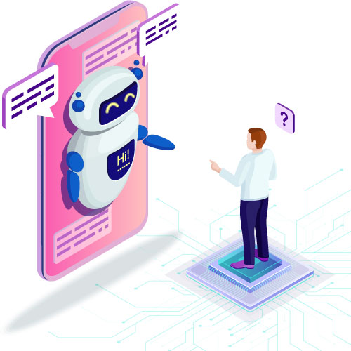
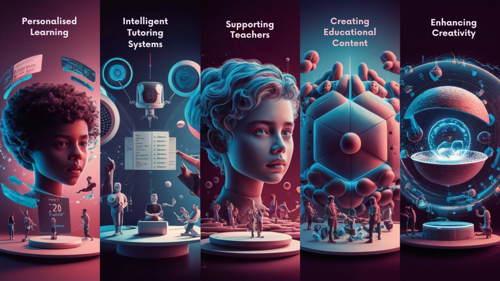
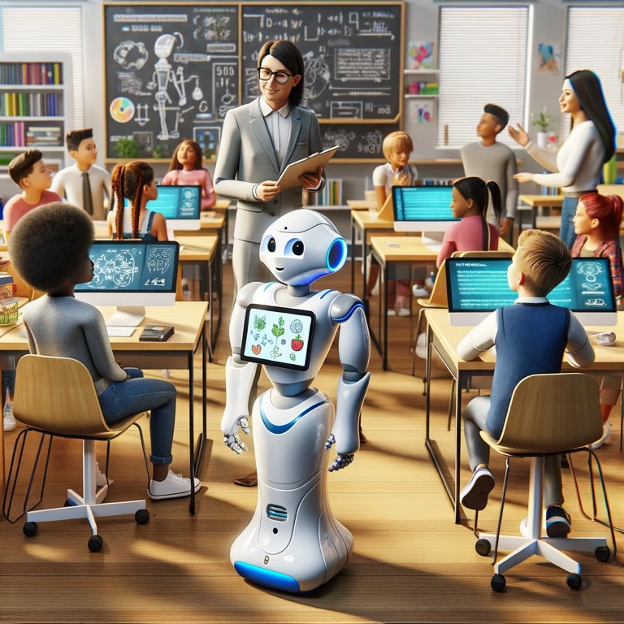

Generartive AI in Schools and Businesses
General Uses of AI in Businesses
Generative AI is used in all parts of a business, from the early stages of research to customer satisfaction after they've interacted with the project. It can identify trends and create synthetic data for different training models in which it can then assist with the creation of prototypes helping speed up both the research and analysis phase. It improves a business internally, from generating reports, drafting internal communications and crafting sales proposals, to externally by powering bots to handle inquiries and provide support 24/7 to consumers.
 

Businesses use generative ai chatbots to be able to improve their customer satisfaction. Although chatbots have been around for a while, generative ai chatbots create a more natural feeling when interacting with them. Based on what the customers wants, the chatbot can create a response specific to those individuals needs allowing it to be an accurate pronblem-solving tool.
Businesses use generative ai to write software code. Using this accelerates the development stage as the AI can write basic software codes, allowing the developer to focus on more complexed aspects of the software. It can also be used to finish off code by using an LLM (Large Language Model) which keeps the developer from exiting a focused mindset and continue with a productive flow.
Businesses use generative ai to help improve their design process to better fit the targeted audience. It can be used to generate anything depending on the user's description, from real world ideas such as clothes, vehicles and products, to ideas leading towards fantasy such as monsters, views of the universe, fairytales and myths thus sparking inspiration that the designer can continue from. It can also be used to improve the quality of already existing designs. It can examine the current design and based on its goal, it can make edits to better represent the idea of the developer.
Cyber security is another aspect of a business that generative ai can have an immense effect on. The same way it can be used to study and recreate patterns in text, it can also identify and study the patterns that would be found in cyber threats or weaknesses in the system. It can be used to automate tasks such as blocking threats, recovering data, generating incident reports and speeding up response times. It also improves the overall defence of the system as it's able to analyse how the system is designed to run and identify anything that it doesn't recognise, it then can use the synthetic data generated to teach threat detections models to be able to find similar threats
General uses of AI in Education
Generative AI in education can help faculty save time by helping to generate up to date course material including lesson plans, quizzes and sample problems. It can also be used to mark exams which grant teachers more time for more interactive sessions between the teachers and students, meanwhile students can use it to enhance their learning experiences as it can narrow down their search when looking for information, amend any mistakes that have been made in a report and improve their understanding of a topic.
How Students use Generative AI
Generative AI can be used to enhance an individual's understanding of anything. Students use generative AI to help them with their learning. It can be used as a personal tutor to further understand the content they're being taught or expand the reach of sources when researching, giving them more concise detail.
Students can copy in the part of the topic that they don't understand, and Gen AI will be able to read through all of it and provide a breakdown and summary that will reduce the lack of understanding the students have by adding depth in a simplistic way. While researching, students can use It to access more information from a larger pool of sources as it focuses on key words that they're looking for and pulls out all the related articles, books, videos, every source it can find, and then it summarises them, prioritising the key words so the student can come to an accurate understanding. It is always available and accessible, providing an around the clock tutor that can help students tackle any unknown aspects of their targeted subject and can gain a

How Teachers use Generative AI
Teachers use generative AI to help them get through administrative tasks such as marking assignments, planning for future classes and creating reports. It takes a significant amount of work of a teacher's plate, allowing them to focus more on interacting with their students and spending more time on them to ensure they understand the topic being taught.
Generative AI gives teachers the opportunity to be able to express their professional judgement on the topic that they are teaching. While AI can be used to help create teaching plans, it won't have the experience, nor the personal relationships the teachers have with the topic and with their students (Department of Education, 2025). The use of generative ai assists a teacher to get the information across while allowing them to refine it further by adding life experiences, judgement and deep subject knowledge to it.
Using generative ai to mark assessments is one of the most effective ways to positively effect a learning environment. It can mark 10s to 100s of assessments saving a significant amount of time while remaining completely objective as human emotions, bias and disinterest would be excluded throughout the entire marking process giving everyone a fair mark. It can also be used to give personalized feedback to students which can be used to improve their writing and performance skills. Teachers will also be able to use this personalised feedback to identify where students are really struggling and be able to provide a more directed lesson. Semantic technologies have been explored to give personalised feedback during online courses and proved successful as it showed that it led to students having a better understanding of concepts and were able to build their knowledge of the topic.